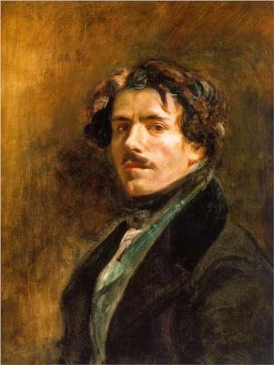
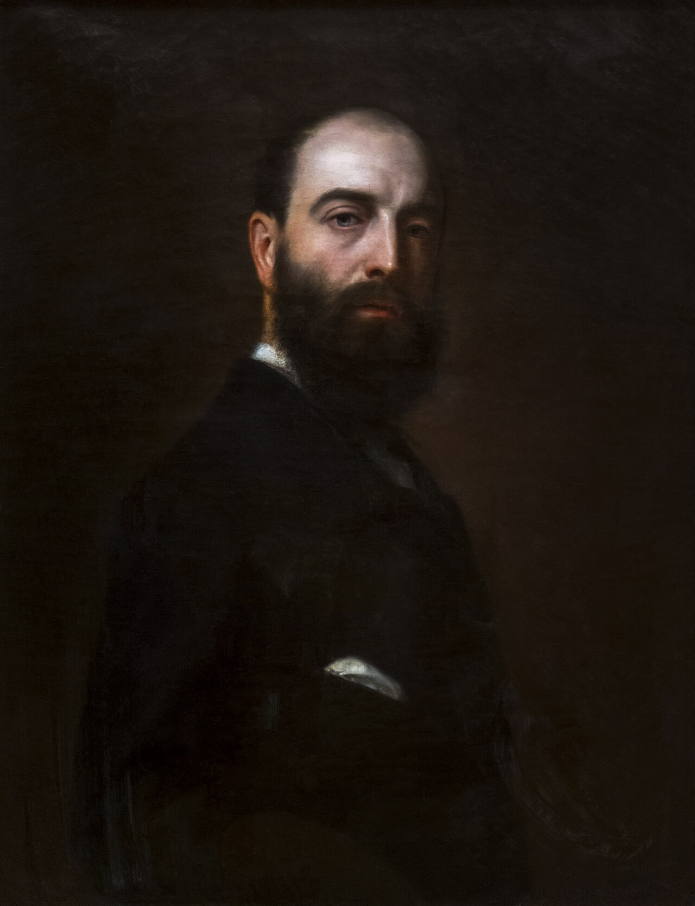
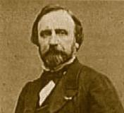

Salon of 1846
Eugène Delacroix
Eugène Delacroix

Le romantisme et la couleur me conduisent droit à Eugène Delacroix . J’ignore s’il est fier de sa qualité de romantique ; mais sa place est ici, parce que la majorité du public l’a depuis longtemps, et même dès sa première œuvre, constitué le chef de l’école moderne .
Romanticism and color lead me straight to Eugène Delacroix. I do not know whether he is proud of the name Romantic; but his place is here, because the majority of the public long ago, and indeed from his very first work, made him the leader of the modern school.
En entrant dans cette partie, mon cœur est plein d’une joie sereine, et je choisis à dessein mes plumes les plus neuves, tant je veux être clair et limpide, et tant je me sens aise d’aborder mon sujet le plus cher et le plus sympathique. Il faut, pour faire bien comprendre les conclusions de ce chapitre, que je remonte un peu haut dans l’histoire de ce temps-ci, et que je remette sous les yeux du public quelques pièces du procès déjà citées par les critiques et les historiens précédents, mais nécessaires pour l’ensemble de la démonstration. Du reste, ce n’est pas sans un vif plaisir que les purs enthousiastes d’Eugène Delacroix reliront un article du Constitutionnel de 1822, tiré du Salon de M. Thiers, journaliste.
As I enter this part of my subject, my heart is filled with a serene joy, and I deliberately choose my freshest pens, so anxious am I to be clear and transparent, and so pleased am I to approach the subject dearest and most congenial to me. To make the conclusions of this chapter fully intelligible, I must go back a little way in the history of our time and place before the public certain pieces of evidence already cited by earlier critics and historians, but necessary to the whole demonstration. Besides, the pure enthusiasts of Eugène Delacroix will not reread without lively pleasure an article from the Constitutionnel of 1822, taken from the Salon of M. Thiers, journalist.
« Aucun tableau ne révèle mieux, à mon avis, l’avenir d’un grand peintre, que celui de M. Delacroix, représentant le Dante et Virgile aux enfers. C’est là surtout qu’on peut remarquer ce jet de talent, cet élan de la supériorité naissante qui ranime les espérances un peu découragées par le mérite trop modéré de tout le reste.
‘No painting, in my opinion, reveals the future of a great painter better than M. Delacroix's Dante and Virgil in Hell. It is here above all that one can perceive that sudden jet of talent, that surge of dawning superiority which revives hopes somewhat discouraged by the too-moderate merit of everything else.
« Le Dante et Virgile, conduits par Caron, traversent le fleuve infernal et fendent avec peine la foule qui se presse autour de la barque pour y pénétrer. Le Dante, supposé vivant, a l’horrible teint des lieux ; Virgile, couronné d’un sombre laurier, a les couleurs de la mort. Les malheureux, condamnés éternellement à désirer la rive opposée, s’attachent à la barque : l’un la saisit en vain, et, renversé par son mouvement trop rapide, est replongé dans les eaux ; un autre l’embrasse et repousse avec les pieds ceux qui veulent aborder comme lui ; deux autres serrent avec les dents le bois qui leur échappe. Il y a là l’égoïsme de la détresse, le désespoir de l’enfer. Dans le sujet si voisin de l’exagération, on trouve cependant une sévérité de goût, une convenance locale, en quelque sorte, qui relève le dessin, auquel des juges sévères, mais peu avisés ici , pourraient reprocher de manquer de noblesse. Le pinceau est large et ferme, la couleur simple et vigoureuse, quoique un peu crue.
‘Dante and Virgil, guided by Charon, cross the infernal river and make their way with difficulty through the crowd pressing around the boat in an attempt to enter it. Dante, supposed to be alive, has the horrible complexion of the place; Virgil, crowned with dark laurel, wears the colors of death. The wretches, eternally condemned to desire the opposite bank, cling to the boat: one grasps it in vain and, thrown backward by his too-violent movement, falls again into the water; another embraces it while pushing away with his feet those who try to board as he does; two others grip with their teeth the wood slipping from them. Here is the selfishness of distress, the despair of hell. In a subject so close to exaggeration, there is nevertheless a severity of taste, a kind of local propriety, which elevates the drawing—drawing that severe but, in this case, ill-advised judges might accuse of lacking nobility. The brushwork is broad and firm, the color simple and vigorous, though a little raw.
« L’auteur a, outre cette imagination poétique qui est commune au peintre comme à l’écrivain, cette imagination de l’art, qu’on pourrait appeler en quelque sorte l’imagination du dessin, et qui est tout autre que la précédente. Il jette ses figures, les groupe et les plie à volonté avec la hardiesse de Michel-Ange et la fécondité de Rubens. Je ne sais quel souvenir des grands artistes me saisit à l’aspect de ce tableau ; je retrouve cette puissance sauvage, ardente, mais naturelle, qui cède sans effort à son propre entraînement. ………………………………………………………………………………………………
‘Besides the poetic imagination common to painter and writer, the author possesses that imagination peculiar to art which one might call, in a sense, the imagination of drawing, and which is entirely different from the former. He throws down his figures, groups and bends them at will, with Michelangelo's boldness and Rubens's abundance. I do not know what memory of the great artists seizes me before this painting; I rediscover that savage, ardent, yet natural power that yields without effort to its own momentum…’
» Je ne crois pas m’y tromper, M. Delacroix a reçu le génie ; qu’il avance avec assurance, qu’il se livre aux immenses travaux, condition indispensable du talent ; et ce qui doit lui donner plus de confiance encore, c’est que l’opinion que j’exprime ici sur son compte est celle de l’un des grands maîtres de l’école. »
‘I do not think I am mistaken: M. Delacroix has received genius. Let him advance confidently and give himself over to immense labors, the indispensable condition of talent; and what should give him still greater confidence is that the opinion I express here about him is shared by one of the great masters of the school.’
Ces lignes enthousiastes sont véritablement stupéfiantes autant par leur précocité que par leur hardiesse. Si le rédacteur en chef du journal avait, comme il est présumable, des prétentions à se connaître en peinture, le jeune Thiers dut lui paraître un peu fou.
These enthusiastic lines are truly astonishing, both for their early date and for their boldness. If the newspaper's editor-in-chief had, as one may suppose, any pretension to understanding painting, the young Thiers must have seemed a little mad to him.
Pour se bien faire une idée du trouble profond que le tableau de Dante et Virgile dut jeter dans les esprits d’alors, de l’étonnement, de l’abasourdissement, de la colère, du hourra, des injures, de l’enthousiasme et des éclats de rire insolents qui entourèrent ce beau tableau, vrai signal d’une révolution, il faut se rappeler que dans l’atelier de M. Guérin, homme d’un grand mérite, mais despote et exclusif comme son maître David, il n’y avait qu’un petit nombre de parias qui se préoccupaient des vieux maîtres à l’écart et osaient timidement conspirer à l’ombre de Raphaël et de Michel-Ange. Il n’est pas encore question de Rubens.
To form a proper idea of the profound disturbance Dante and Virgil must have caused in contemporary minds—the astonishment, stupefaction, anger, cheers, insults, enthusiasm, and insolent bursts of laughter surrounding this beautiful painting, a true signal of revolution—we must remember that in M. Guérin's studio, a man of great merit but a despot and exclusivist like his master David, only a small group of outcasts concerned themselves with the old masters apart from the approved tradition and dared timidly to conspire in the shadow of Raphael and Michelangelo. Rubens was not yet in question.
M. Guérin, rude et sévère envers son jeune élève, ne regarda le tableau qu’à cause du bruit qui se faisait autour.
M. Guérin, harsh and severe with his young pupil, looked at the painting only because of the noise being made around it.
Géricault, qui revenait d’Italie, et avait, dit-on, devant les grandes fresques romaines et florentines, abdiqué plusieurs de ses qualités presque originales, complimenta si fort le nouveau peintre, encore timide, que celui-ci en était presque confus.
Géricault, returning from Italy, where it was said that before the great Roman and Florentine frescoes he had renounced several of his almost original qualities, complimented the new and still timid painter so warmly that the latter was nearly embarrassed.
Ce fut devant cette peinture, ou quelque temps après, devant les Pestiférés de Scio , que Gérard lui-même, qui, à ce qu’il semble, était plus homme d’esprit que peintre, s’écria : « Un peintre vient de nous être révélé, mais c’est un homme qui court sur les toits ! » — Pour courir sur les toits, il faut avoir le pied solide et l’œil illuminé par la lumière intérieure.
It was before this painting, or some time later before the Plague-Stricken of Chios, that Gérard himself—who seems to have been more a man of wit than a painter—exclaimed: ‘A painter has just been revealed to us, but he is a man who runs over rooftops!’ To run over rooftops one needs a sure footing and an eye illuminated by inward light.
Gloire et justice soient rendues à MM. Thiers et Gérard.
Glory and justice be rendered to MM. Thiers and Gérard.
Depuis le tableau de Dante et Virgile jusqu’aux peintures de la chambre des pairs et des députés, l’espace est grand sans doute ; mais la biographie d’Eugène Delacroix est peu accidentée. Pour un pareil homme, doué d’un tel courage et d’une telle passion, les luttes les plus intéressantes sont celles qu’il a à soutenir contre lui-même ; les horizons n’ont pas besoin d’être grands pour que les batailles soient importantes ; les révolutions et les événements les plus curieux se passent sous le ciel du crâne, dans le laboratoire étroit et mystérieux du cerveau.
From Dante and Virgil to the paintings of the chambers of Peers and Deputies the distance is certainly great; but Eugène Delacroix's biography is poor in incident. For a man endowed with such courage and such passion, the most interesting struggles are those he must wage against himself. Horizons need not be vast for battles to be important; the most curious revolutions and events occur beneath the roof of the skull, in the narrow and mysterious laboratory of the brain.
L’homme étant donc bien dûment révélé et se révélant de plus en plus (tableau allégorique de la Grèce, le Sardanapale, la Liberté, etc.), la contagion du nouvel évangile empirant de jour en jour, le dédain académique se vit contraint lui-même de s’inquiéter de ce nouveau génie. M. Sosthène de La Rochefoucauld, alors directeur des beaux-arts, fit un beau jour mander E. Delacroix, et lui dit, après maint compliment, qu’il était affligeant qu’un homme d’une si riche imagination et d’un si beau talent, auquel le gouvernement voulait du bien, ne voulût pas mettre un peu d’eau dans son vin ; il lui demanda définitivement s’il ne lui serait pas possible de modifier sa manière. Eugène Delacroix, prodigieusement étonné de cette condition bizarre et de ces conseils ministériels, répondit avec une colère presque comique qu’apparemment s’il peignait ainsi, c’est qu’il le fallait et qu’il ne pouvait pas peindre autrement. Il tomba dans une disgrâce complète, et fut pendant sept ans sevré de toute espèce de travaux. Il fallut attendre 1830. M. Thiers avait fait dans le Globe un nouvel et très-pompeux article.
Once the man had been duly revealed, and continued to reveal himself more and more—the allegorical Greece, Sardanapalus, Liberty, and so on—the contagion of the new gospel worsening from day to day, academic disdain itself was forced to take notice of this new genius. One fine day M. Sosthène de La Rochefoucauld, then Director of Fine Arts, summoned E. Delacroix and, after many compliments, told him that it was distressing that a man of such rich imagination and fine talent, whom the government wished well, would not put a little water in his wine. He asked him point-blank whether he could not modify his manner. Eugène Delacroix, prodigiously astonished by this bizarre condition and these ministerial counsels, answered with almost comic anger that if he painted as he did, it was apparently because he had to and could not paint otherwise. He fell into complete disgrace and for seven years was deprived of every kind of commission. One had to wait until 1830. M. Thiers meanwhile had written another, very pompous article in the Globe.
Un voyage à Maroc laissa dans son esprit, à ce qu’il semble, une impression profonde ; là il put à loisir étudier l’homme et la femme dans l’indépendance et l’originalité native de leurs mouvements, et comprendre la beauté antique par l’aspect d’une race pure de toute mésalliance et ornée de sa santé et du libre développement de ses muscles. C’est probablement de cette époque que datent la composition des Femmes d’Alger et une foule d’esquisses.
A journey to Morocco seems to have left a deep impression on his mind. There he could study at leisure men and women in the independence and native originality of their movements, and understand antique beauty through the sight of a race free from mixture, adorned by health and the free development of its muscles. It is probably from this period that the Women of Algiers and a multitude of sketches date.
Jusqu’à présent on a été injuste envers Eugène Delacroix. La critique a été pour lui amère et ignorante ; sauf quelques nobles exceptions, la louange elle-même a dû souvent lui paraître choquante. En général, et pour la plupart des gens, nommer Eugène Delacroix, c’est jeter dans leur esprit je ne sais quelles idées vagues de fougue mal dirigée, de turbulence, d’inspiration aventurière, de désordre même ; et pour ces messieurs qui font la majorité du public, le hasard, honnête et complaisant serviteur du génie, joue un grand rôle dans ses plus heureuses compositions. Dans la malheureuse époque de révolution dont je parlais tout à l’heure, et dont j’ai enregistré les nombreuses méprises, on a souvent comparé Eugène Delacroix à Victor Hugo. On avait le poëte romantique, il fallait le peintre. Cette nécessité de trouver à tout prix des pendants et des analogues dans les différents arts amène souvent d’étranges bévues, et celle-ci prouve encore combien l’on s’entendait peu. À coup sûr la comparaison dut paraître pénible à Eugène Delacroix, peut-être à tous deux ; car si ma définition du romantisme (intimité, spiritualité, etc.) place Delacroix à la tête du romantisme, elle en exclut naturellement M. Victor Hugo. Le parallèle est resté dans le domaine banal des idées convenues, et ces deux préjugés encombrent encore beaucoup de têtes faibles. Il faut en finir une fois pour toutes avec ces niaiseries de rhétoricien. Je prie tous ceux qui ont éprouvé le besoin de créer à leur propre usage une certaine esthétique, et de déduire les causes des résultats, de comparer attentivement les produits de ces deux artistes.
Up to now Eugène Delacroix has been treated unjustly. Criticism has been bitter and ignorant toward him; with a few noble exceptions, even praise must often have seemed offensive. In general, and for most people, to name Eugène Delacroix is to awaken vague notions of badly directed fire, turbulence, adventurous inspiration, even disorder; and for these gentlemen, who form the majority of the public, chance—the honest and obliging servant of genius—plays a great role in his happiest compositions. During the unfortunate revolutionary period I mentioned above, whose many misunderstandings I have recorded, Eugène Delacroix was often compared with Victor Hugo. Since there was a Romantic poet, a Romantic painter had to be found. This need to discover counterparts and analogues at any cost among the different arts often leads to strange blunders, and this one again proves how little people understood. The comparison must certainly have been painful to Delacroix, perhaps to both men; for if my definition of Romanticism—intimacy, spirituality, and so on—places Delacroix at its head, it naturally excludes M. Victor Hugo. The parallel has remained in the banal realm of received ideas, and these two prejudices still clutter many weak minds. We must settle such rhetorical nonsense once and for all. I ask everyone who has felt the need to create an aesthetics for personal use and to infer causes from results to compare closely the productions of these two artists.
M. Victor Hugo, dont je ne veux certainement pas diminuer la noblesse et la majesté, est un ouvrier beaucoup plus adroit qu’inventif, un travailleur bien plus correct que créateur. Delacroix est quelquefois maladroit, mais essentiellement créateur. M. Victor Hugo laisse voir dans tous ses tableaux, lyriques et dramatiques, un système d’alignement et de contrastes uniformes. L’excentricité elle-même prend chez lui des formes symétriques. Il possède à fond et emploie froidement tous les tons de la rime, toutes les ressources de l’antithèse, toutes les tricheries de l’apposition. C’est un compositeur de décadence ou de transition, qui se sert de ses outils avec une dextérité véritablement admirable et curieuse. M. Hugo était naturellement académicien avant que de naître, et si nous étions encore au temps des merveilles fabuleuses, je croirais volontiers que les lions verts de l’Institut, quand il passait devant le sanctuaire courroucé, lui ont souvent murmuré d’une voix prophétique : « Tu seras de l’Académie ! »
M. Victor Hugo, whose nobility and majesty I certainly do not wish to diminish, is a craftsman much more skillful than inventive, a worker much more correct than creative. Delacroix is sometimes awkward, but essentially creative. M. Victor Hugo reveals in all his pictures, lyrical and dramatic, a system of alignments and uniform contrasts. Even eccentricity takes symmetrical forms with him. He thoroughly commands and coldly employs every tone of rhyme, every resource of antithesis, every trick of apposition. He is a composer of decadence or transition who uses his tools with genuinely admirable and curious dexterity. M. Hugo was naturally an Academician before he was born, and if we still lived in the age of fabulous marvels I would readily believe that the green lions of the Institute, when he passed the offended sanctuary, often murmured to him prophetically: ‘You shall belong to the Academy!’
Pour Delacroix, la justice est plus tardive. Ses œuvres, au contraire, sont des poëmes, et de grands poëmes naïvement conçus , exécutés avec l’insolence accoutumée du génie. — Dans ceux du premier, il n’y a rien à deviner ; car il prend tant de plaisir à montrer son adresse, qu’il n’omet pas un brin d’herbe ni un reflet de réverbère. — Le second ouvre dans les siens de profondes avenues à l’imagination la plus voyageuse. — Le premier jouit d’une certaine tranquillité, disons mieux, d’un certain égoïsme de spectateur, qui fait planer sur toute sa poésie je ne sais quelle froideur et quelle modération, — que la passion tenace et bilieuse du second, aux prises avec les patiences du métier, ne lui permet pas toujours de garder. — L’un commence par le détail, l’autre par l’intelligence intime du sujet ; d’où il arrive que celui-ci n’en prend que la peau, et que l’autre en arrache les entrailles. Trop matériel, trop attentif aux superficies de la nature, M. Victor Hugo est devenu un peintre en poésie ; Delacroix, toujours respectueux de son idéal, est souvent, à son insu, un poëte en peinture.
Justice came later for Delacroix. His works, by contrast, are poems—great poems, conceived naïvely and executed with the customary insolence of genius. In the first man's works there is nothing to guess, for he takes such pleasure in displaying his skill that he omits neither a blade of grass nor the reflection of a streetlamp. The second opens deep avenues in his works for the most wandering imagination. The first enjoys a certain calm—or better, a spectator's selfishness—which casts over all his poetry a certain coldness and moderation; the second's tenacious, bilious passion, wrestling with the patience demanded by craft, does not always allow him to maintain such calm. One begins with detail, the other with the intimate intelligence of the subject; hence one takes only the skin while the other tears out the entrails. Too material, too attentive to nature's surfaces, M. Victor Hugo has become a painter in poetry; Delacroix, always respectful of his ideal, is often, without knowing it, a poet in painting.
Quant au second préjugé, le préjugé du hasard, il n’a pas plus de valeur que le premier. — Rien n’est plus impertinent ni plus bête que de parler à un grand artiste, érudit et penseur comme Delacroix, des obligations qu’il peut avoir au dieu du hasard. Cela fait tout simplement hausser les épaules de pitié. Il n’y a pas de hasard dans l’art, non plus qu’en mécanique. Une chose heureusement trouvée est la simple conséquence d’un bon raisonnement, dont on a quelquefois sauté les déductions intermédiaires, comme une faute est la conséquence d’un faux principe. Un tableau est une machine dont tous les systèmes sont intelligibles pour un œil exercé ; où tout a sa raison d’être, si le tableau est bon ; où un ton est toujours destiné à en faire valoir un autre ; où une faute occasionnelle de dessin est quelquefois nécessaire pour ne pas sacrifier quelque chose de plus important.
As for the second prejudice, the prejudice of chance, it has no more value than the first. Nothing is more impertinent or stupid than speaking to a great artist, a learned man and thinker like Delacroix, of what he may owe to the god of chance. It merely makes one shrug with pity. There is no chance in art any more than in mechanics. A fortunate discovery is simply the consequence of good reasoning, whose intermediate deductions have sometimes been skipped, just as an error is the consequence of a false principle. A painting is a machine whose every system is intelligible to a practiced eye; in a good painting everything has its reason for being; one tone is always intended to make another tell; an occasional fault in drawing is sometimes necessary in order not to sacrifice something more important.
Cette intervention du hasard dans les affaires de peinture de Delacroix est d’autant plus invraisemblable qu’il est un des rares hommes qui restent originaux après avoir puisé à toutes les vraies sources, et dont l’individualité indomptable a passé alternativement sous le joug secoué de tous les grands maîtres. — Plus d’un serait assez étonné de voir une étude de lui d’après Raphaël, chef-d’œuvre patient et laborieux d’imitation, et peu de personnes se souviennent aujourd’hui des lithographies qu’il a faites d’après des médailles et des pierres gravées.
The intervention of chance in Delacroix's painting is all the more implausible because he is one of the rare men who remain original after drawing from every true source, and whose indomitable individuality has passed in turn beneath the yoke—then shaken off—of all the great masters. More than one person would be surprised to see a study by him after Raphael, a patient and laborious masterpiece of imitation, and few people today remember the lithographs he made after medals and engraved stones.
Voici quelques lignes de M. Henri Heine qui expliquent assez bien la méthode de Delacroix, méthode qui est, comme chez tous les hommes vigoureusement constitués, le résultat de son tempérament : « En fait d’art, je suis surnaturaliste. Je crois que l’artiste ne peut trouver dans la nature tous ses types, mais que les plus remarquables lui sont révélés dans son âme, comme la symbolique innée d’idées innées, et au même instant. Un moderne professeur d’esthétique, qui a écrit des Recherches sur l’Italie, a voulu remettre en honneur le vieux principe de l’ imitation de la nature, et soutenir que l’artiste plastique devait trouver dans la nature tous ses types. Ce professeur, en étalant ainsi son principe suprême des arts plastiques, avait seulement oublié un de ces arts, l’un des plus primitifs, je veux dire l’architecture, dont on a essayé de retrouver après coup les types dans les feuillages des forêts, dans les grottes des rochers : ces types n’étaient point dans la nature extérieure, mais bien dans l’âme humaine. »
Here are a few lines by Heinrich Heine that explain Delacroix's method fairly well, a method which, as in all strongly constituted men, results from his temperament: ‘In art I am a supernaturalist. I believe the artist cannot find all his types in nature, but that the most remarkable are revealed within his soul, like the innate symbolism of innate ideas, and at the same instant. A modern professor of aesthetics, who wrote Researches on Italy, wished to restore the old principle of imitation of nature and maintain that the plastic artist should find all his types in nature. In setting forth this supreme principle of the plastic arts, the professor merely forgot one of those arts, one of the most primitive—I mean architecture—whose types people later tried to rediscover in forest foliage and rocky caves. Those types were not in external nature but in the human soul.’
Delacroix part donc de ce principe, qu’un tableau doit avant tout reproduire la pensée intime de l’artiste, qui domine le modèle, comme le créateur la création ; et de ce principe il en sort un second qui semble le contredire à première vue, — à savoir, qu’il faut être très-soigneux des moyens matériels d’exécution. — Il professe une estime fanatique pour la propreté des outils et la préparation des éléments de l’œuvre. — En effet, la peinture étant un art d’un raisonnement profond et qui demande la concurrence immédiate d’une foule de qualités, il est important que la main rencontre, quand elle se met à la besogne, le moins d’obstacles possible, et accomplisse avec une rapidité servile les ordres divins du cerveau : autrement l’idéal s’envole.
Delacroix therefore begins from this principle: a painting must above all reproduce the artist's inward thought, which dominates the model as the creator dominates creation. From this principle follows a second that at first seems to contradict it: the material means of execution must be tended with the greatest care. He professes a fanatical respect for clean tools and for the preparation of the elements of the work. Painting is an art of profound reasoning requiring the immediate cooperation of a multitude of qualities; it is therefore important that, once the hand sets to work, it encounter as few obstacles as possible and carry out with servile speed the divine orders of the brain. Otherwise the ideal flies away.
Aussi lente, sérieuse, consciencieuse est la conception du grand artiste, aussi preste est son exécution. C’est du reste une qualité qu’il partage avec celui dont l’opinion publique a fait son antipode, M. Ingres. L’accouchement n’est point l’enfantement, et ces grands seigneurs de la peinture, doués d’une paresse apparente, déploient une agilité merveilleuse à couvrir une toile. Le Saint Symphorien a été refait entièrement plusieurs fois, et dans le principe il contenait beaucoup moins de figures.
The great artist's conception is slow, serious, and conscientious; his execution is swift. This is, moreover, a quality Delacroix shares with the man public opinion has made his opposite, M. Ingres. Labor is not conception, and these great lords of painting, endowed with apparent laziness, display marvelous agility when it comes to covering a canvas. Saint Symphorien was entirely remade several times and originally contained far fewer figures.
Pour E. Delacroix, la nature est un vaste dictionnaire dont il roule et consulte les feuilles avec un œil sûr et profond ; et cette peinture, qui procède surtout du souvenir, parle surtout au souvenir. L’effet produit sur l’âme du spectateur est analogue aux moyens de l’artiste. Un tableau de Delacroix, Dante et Virgile , par exemple, laisse toujours une impression profonde, dont l’intensité s’accroît par la distance. Sacrifiant sans cesse le détail à l’ensemble, et craignant d’affaiblir la vitalité de sa pensée par la fatigue d’une exécution plus nette et plus calligraphique, il jouit pleinement d’une originalité insaisissable, qui est l’intimité du sujet.
For E. Delacroix, nature is a vast dictionary whose pages he turns and consults with a sure and penetrating eye; and this painting, which proceeds above all from memory, speaks above all to memory. The effect produced on the spectator's soul corresponds to the artist's means. A painting by Delacroix—Dante and Virgil, for example—always leaves a deep impression whose intensity increases with distance. Constantly sacrificing detail to the whole, and fearing that the vitality of his thought might be weakened by the fatigue of a neater and more calligraphic execution, he fully enjoys an elusive originality: intimacy with the subject.
L’exercice d’une dominante n’a légitimement lieu qu’au détriment du reste. Un goût excessif nécessite les sacrifices, et les chefs-d’œuvre ne sont jamais que des extraits divers de la nature. C’est pourquoi il faut subir les conséquences d’une grande passion, quelle qu’elle soit, accepter la fatalité d’un talent, et ne pas marchander avec le génie. C’est à quoi n’ont pas songé les gens qui ont tant raillé le dessin de Delacroix ; en particulier les sculpteurs, gens partiaux et borgnes plus qu’il n’est permis, et dont le jugement vaut tout au plus la moitié d’un jugement d’architecte. — La sculpture, à qui la couleur est impossible et le mouvement difficile, n’a rien à démêler avec un artiste que préoccupent surtout le mouvement, la couleur et l’atmosphère. Ces trois éléments demandent nécessairement un contour un peu indécis, des lignes légères et flottantes, et l’audace de la touche. — Delacroix est le seul aujourd’hui dont l’originalité n’ait pas été envahie par le système des lignes droites ; ses personnages sont toujours agités, et ses draperies voltigeantes. Au point de vue de Delacroix, la ligne n’est pas ; car, si ténue qu’elle soit, un géomètre taquin peut toujours la supposer assez épaisse pour en contenir mille autres ; et pour les coloristes, qui veulent imiter les palpitations éternelles de la nature, les lignes ne sont jamais, comme dans l’arc-en-ciel, que la fusion intime de deux couleurs.
The legitimate exercise of a dominant quality can occur only at the expense of the rest. An excessive taste requires sacrifices, and masterpieces are never anything but differing extracts from nature. One must therefore accept the consequences of a great passion, whatever it may be, accept the fatality of a talent, and not bargain with genius. This is what those who so mocked Delacroix's drawing failed to consider—especially sculptors, people more partial and one-eyed than is permissible, whose judgment is worth at most half an architect's. Sculpture, to which color is impossible and movement difficult, has no business judging an artist concerned above all with movement, color, and atmosphere. These three elements necessarily require a somewhat uncertain contour, light and floating lines, and boldness of touch. Delacroix alone today has an originality not invaded by the system of straight lines; his figures are always agitated and his draperies flying. From Delacroix's point of view the line does not exist, for however thin it may be, a quibbling geometer can always suppose it thick enough to contain a thousand others; and for colorists, who wish to imitate nature's eternal pulsations, lines are never, as in the rainbow, anything but the intimate fusion of two colors.
D’ailleurs il y a plusieurs dessins, comme plusieurs couleurs : — exacts ou bêtes, physionomiques et imaginés.
Besides, there are several kinds of drawing, just as there are several kinds of color: accurate or stupid, physiognomic and imagined.
Le premier est négatif, incorrect à force de réalité, naturel, mais saugrenu ; le second est un dessin naturaliste, mais idéalisé, dessin d’un génie qui sait choisir, arranger, corriger, deviner, gourmander la nature ; enfin le troisième, qui est le plus noble et le plus étrange, peut négliger la nature ; il en représente une autre, analogue à l’esprit et au tempérament de l’auteur.
The first is negative, incorrect through excess of reality, natural but odd; the second is naturalistic yet idealized, the drawing of a genius who knows how to choose, arrange, correct, divine, and discipline nature; finally the third, the noblest and strangest, may neglect nature altogether, for it represents another nature analogous to the artist's spirit and temperament.
Le dessin physionomique appartient généralement aux passionnés, comme M. Ingres ; le dessin de création est le privilège du génie .
Physiognomic drawing generally belongs to men of passion, such as M. Ingres; creative drawing is the privilege of genius.
La grande qualité du dessin des artistes suprêmes est la vérité du mouvement, et Delacroix ne viole jamais cette loi naturelle.
The great quality of the drawing of supreme artists is truth of movement, and Delacroix never violates this natural law.
Passons à l’examen de qualités plus générales encore. — Un des caractères principaux du grand peintre est l’universalité. — Ainsi le poëte épique, Homère ou Dante, sait faire également bien une idylle, un récit, un discours, une description, une ode, etc.
Let us pass to still more general qualities. One of the principal characteristics of the great painter is universality. Thus the epic poet, Homer or Dante, can make equally well an idyll, a narrative, a speech, a description, an ode, and so on.
De même Rubens, s’il peint des fruits, peindra des fruits plus beaux qu’un spécialiste quelconque.
Similarly, if Rubens paints fruit, he will paint fruit better than any specialist.
E. Delacroix est universel ; il a fait des tableaux de genre pleins d’intimité, des tableaux d’histoire pleins de grandeur. Lui seul, peut-être, dans notre siècle incrédule, a conçu des tableaux de religion qui n’étaient ni vides et froids comme des œuvres de concours, ni pédants, mystiques ou néo-chrétiens, comme ceux de tous ces philosophes de l’art qui font de la religion une science d’archaïsme, et croient nécessaire de posséder avant tout la symbolique et les traditions primitives pour remuer et faire chanter la corde religieuse.
E. Delacroix is universal. He has made genre pictures full of intimacy and history paintings full of grandeur. Perhaps he alone, in our unbelieving century, has conceived religious paintings that are neither empty and cold like competition pieces nor pedantic, mystical, or neo-Christian like the productions of all those philosophers of art who turn religion into a science of archaism and believe they must first possess symbolism and primitive traditions before they can stir and make the religious chord sing.
Cela se comprend facilement, si l’on veut considérer que Delacroix est, comme tous les grands maîtres, un mélange admirable de science, — c’est-à-dire un peintre complet, — et de naïveté, c’est-à-dire un homme complet. Allez voir à Saint-Louis au Marais cette Pietà , où la majestueuse reine des douleurs tient sur ses genoux le corps de son enfant mort, les deux bras étendus horizontalement dans un accès de désespoir, une attaque de nerfs maternelle. L’un des deux personnages qui soutient et modère sa douleur est éploré comme les figures les plus lamentables de l’ Hamlet , avec laquelle œuvre celle-ci a du reste plus d’un rapport. — Des deux saintes femmes, la première rampe convulsivement à terre, encore revêtue des bijoux et des insignes du luxe ; l’autre, blonde et dorée, s’affaisse plus mollement sous le poids énorme de son désespoir.
This is easy to understand if one considers that Delacroix, like all great masters, is an admirable mixture of knowledge—that is, a complete painter—and naïveté—that is, a complete man. Go to Saint-Louis-du-Marais and see that Pietà in which the majestic Queen of Sorrows holds on her knees the body of her dead child, both arms stretched horizontally in an access of despair, a maternal nervous convulsion. One of the two figures supporting and restraining her grief is as distraught as the most lamentable figures in Hamlet, a work to which this one bears more than one relation. Of the two holy women, the first crawls convulsively on the ground, still wearing the jewels and signs of luxury; the other, blonde and golden, collapses more softly beneath the enormous weight of her despair.
Le groupe est échelonné et disposé tout entier sur un fond d’un vert sombre et uniforme, qui ressemble autant à des amas de rochers qu’à une mer bouleversée par l’orage. Ce fond est d’une simplicité fantastique, et E. Delacroix a sans doute, comme Michel-Ange, supprimé l’accessoire pour ne pas nuire à la clarté de son idée. Ce chef-d’œuvre laisse dans l’esprit un sillon profond de mélancolie. — Ce n’était pas, du reste, la première fois qu’il attaquait les sujets religieux. Le Christ aux Oliviers , le Saint Sébastien , avaient déjà témoigné de la gravité et de la sincérité profonde dont il sait les empreindre.
The whole group is stepped and arranged against a uniform dark-green background that looks as much like masses of rock as a sea overturned by storm. The background has a fantastic simplicity; Delacroix has doubtless, like Michelangelo, suppressed accessories so as not to injure the clarity of his idea. This masterpiece leaves a deep furrow of melancholy in the mind. Nor was this the first time he had tackled religious subjects. Christ on the Mount of Olives and Saint Sebastian had already testified to the gravity and profound sincerity he knows how to stamp upon them.



Mais pour expliquer ce que j’affirmais tout à l’heure, — que Delacroix seul sait faire de la religion, — je ferai remarquer à l’observateur que, si ses tableaux les plus intéressants sont presque toujours ceux dont il choisit les sujets, c’est-à-dire ceux de fantaisie, — néanmoins la tristesse sérieuse de son talent convient parfaitement à notre religion, religion profondément triste, religion de la douleur universelle, et qui, à cause de sa catholicité même, laisse une pleine liberté à l’individu et ne demande pas mieux que d’être célébrée dans le langage de chacun, — s’il connaît la douleur et s’il est peintre.
But to explain what I asserted just now—that Delacroix alone knows how to make religion—I would ask the observer to note that, although his most interesting paintings are almost always those whose subjects he chooses himself, that is, works of fantasy, the serious sadness of his talent nonetheless suits our religion perfectly: a profoundly sad religion, a religion of universal suffering which, precisely because of its catholicity, leaves full freedom to the individual and asks nothing better than to be celebrated in each person's own language—provided he knows suffering and is a painter.
Je me rappelle qu’un de mes amis, garçon de mérite d’ailleurs, coloriste déjà en vogue, — un de ces jeunes hommes précoces qui donnent des espérances toute leur vie, et beaucoup plus académique qu’il ne le croit lui-même, — appelait cette peinture : peinture de cannibale !
I remember that one of my friends—a talented fellow, a colorist already in vogue, one of those precocious young men who spend their whole lives giving promise, and much more academic than he believes himself—called this painting ‘cannibal painting!’
À coup sûr, ce n’est point dans les curiosités d’une palette encombrée, ni dans le dictionnaire des règles, que notre jeune ami saura trouver cette sanglante et farouche désolation, à peine compensée par le vert sombre de l’espérance !
Certainly it is not among the curiosities of an overloaded palette, nor in the dictionary of rules, that our young friend will learn to find this bloody and savage desolation, scarcely compensated by the dark green of hope!
Cet hymne terrible à la douleur faisait sur sa classique imagination l’effet des vins redoutables de l’Anjou, de l’Auvergne ou du Rhin, sur un estomac accoutumé aux pâles violettes du Médoc.
This terrible hymn to suffering affected his classical imagination like the formidable wines of Anjou, Auvergne, or the Rhine upon a stomach accustomed to the pale clarets of Médoc.
Ainsi, universalité de sentiment, — et maintenant universalité de science !
Thus, universality of feeling—and now universality of knowledge!
Depuis longtemps les peintres avaient, pour ainsi dire, désappris le genre dit de décoration. L’hémicycle des Beaux-Arts est une œuvre puérile et maladroite, où les intentions se contredisent, et qui ressemble à une collection de portraits historiques. Le Plafond d’Homère est un beau tableau qui plafonne mal. La plupart des chapelles exécutées dans ces derniers temps, et distribuées aux élèves de M. Ingres, sont faites dans le système des Italiens primitifs, c’est-à-dire qu’elles veulent arriver à l’unité par la suppression des effets lumineux et par un vaste système de coloriages mitigés. Ce système, plus raisonnable sans doute, esquive les difficultés. Sous Louis XIV , Louis XV et Louis XVI , les peintres firent des décorations à grand fracas, mais qui manquaient d’unité dans la couleur et dans la composition.
Painters had long since, so to speak, unlearned the genre called decoration. The hemicycle of the École des Beaux-Arts is a childish and awkward work whose intentions contradict one another and which resembles a collection of historical portraits. The Ceiling of Homer is a beautiful painting that works badly as a ceiling. Most chapels executed in recent years and distributed among M. Ingres's pupils follow the system of the early Italians; that is, they seek unity by suppressing effects of light and through a vast system of moderated coloring. This system, more reasonable no doubt, sidesteps the difficulties. Under Louis XIV, Louis XV, and Louis XVI painters produced decorations with great fanfare, but they lacked unity in color and composition.
E. Delacroix eut des décorations à faire, et il résolut le grand problème. Il trouva l’unité dans l’aspect sans nuire à son métier de coloriste.
E. Delacroix was given decorations to execute, and he solved the great problem. He found unity of appearance without injuring his profession as a colorist.
La Chambre des députés est là qui témoigne de ce singulier tour de force. La lumière, économiquement dispensée, circule à travers toutes ces figures, sans intriguer l’œil d’une manière tyrannique.
The Chamber of Deputies stands as witness to this singular tour de force. Light, economically distributed, circulates among all these figures without tyrannizing over the eye.
Le plafond circulaire de la bibliothèque du Luxembourg est une œuvre plus étonnante encore, où le peintre est arrivé, — non seulement à un effet encore plus doux et plus uni, sans rien supprimer des qualités de couleur et de lumière, qui sont le propre de tous ses tableaux, — mais encore s’est révélé sous un aspect tout nouveau : Delacroix paysagiste !
The circular ceiling of the Luxembourg Library is a still more astonishing work. There the painter achieved not only an effect even softer and more unified without suppressing any of the qualities of color and light proper to all his paintings, but also revealed himself under an entirely new aspect: Delacroix the landscape painter!
Au lieu de peindre Apollon et les Muses, décoration invariable des bibliothèques, E. Delacroix a cédé à son goût irrésistible pour Dante, que Shakspeare seul balance peut-être dans son esprit, et il a choisi le passage où Dante et Virgile rencontrent dans un lieu mystérieux les principaux poëtes de l’antiquité :
Instead of painting Apollo and the Muses, the invariable decoration of libraries, E. Delacroix yielded to his irresistible taste for Dante, rivaled perhaps only by Shakespeare in his mind, and chose the passage in which Dante and Virgil meet, in a mysterious place, the principal poets of antiquity:
« Nous ne laissions pas d’aller, tandis qu’il parlait ; mais nous traversions toujours la forêt, épaisse forêt d’esprits, veux-je dire. Nous n’étions pas bien éloignés de l’entrée de l’abîme, quand je vis un feu qui perçait un hémisphère de ténèbres. Quelques pas nous en séparaient encore, mais je pouvais déjà entrevoir que des esprits glorieux habitaient ce séjour.
‘We kept moving on while he spoke, yet all the while we passed through the forest—a thick forest of spirits, I mean. We were not far from the entrance to the abyss when I saw a fire piercing a hemisphere of darkness. A few steps still separated us, but already I could make out that glorious spirits inhabited that place.
« — Ô toi, qui honores toute science et tout art, quels sont ces esprits auxquels on fait tant d’honneur qu’on les sépare du sort des autres ?
‘O you who honor every science and every art, who are these spirits to whom such honor is shown that they are separated from the fate of the others?’
« Il me répondit : — Leur belle renommée, qui retentit là-haut dans votre monde, trouve grâce dans le ciel, qui les distingue des autres.
‘He answered me: Their fair fame, which echoes above in your world, finds favor in heaven, which distinguishes them from the rest.’
« Cependant une voix se fit entendre : « Honorez le sublime poëte ; son ombre, qui était partie, nous revient. »
‘Then a voice was heard: “Honor the sublime poet; his shade, which had departed, returns to us.”’
« La voix se tut, et je vis venir à nous quatre grandes ombres ; leur aspect n’était ni triste ni joyeux.
‘The voice fell silent, and I saw four great shades coming toward us; their appearance was neither sad nor joyful.
« Le bon maître me dit : — Regarde celui qui marche, une épée à la main, en avant des trois autres, comme un roi : c’est Homère, poëte souverain ; l’autre qui le suit est Horace le satirique ; Ovide est le troisième, et le dernier est Lucain. Comme chacun d’eux partage avec moi le nom qu’a fait retentir la voix unanime, ils me font honneur et ils font bien !
‘The good master said to me: Look at the one who walks, sword in hand, before the other three like a king: that is Homer, sovereign poet; the one who follows is Horace the satirist; Ovid is third, and the last is Lucan. Since each shares with me the name proclaimed by the unanimous voice, they do me honor, and rightly so!’
« Ainsi je vis se réunir la belle école de ce maître du chant sublime, qui plane sur les autres comme l’aigle. Dès qu’ils eurent devisé ensemble quelque peu, ils se tournèrent vers moi avec un geste de salut, ce qui fit sourire mon guide. Et ils me firent encore plus d’honneur, car ils me reçurent dans leur troupe, de sorte que je fus le sixième parmi tant de génies . . . . . . . . . . . . . . . . . . . . . . . . . . . . . . . . . . . . . . . . . . . . . . . . . . . . . . . . . . . . . . . . . . . . . . . . . . . . . . . . . . . . . . . . . . . . . . . . . . . . . . . . . . . . . . . . . . . . . . . . . . . . . . . . . . . . . . . »
‘Thus I saw assembled the noble school of that master of sublime song who soars above the others like an eagle. After they had spoken together for a little while, they turned toward me with a gesture of greeting, which made my guide smile. And they did me still greater honor, for they received me into their company, so that I became the sixth among so many geniuses.’
Je ne ferai pas à E. Delacroix l’injure d’un éloge exagéré pour avoir si bien vaincu la concavité de sa toile et y avoir placé des figures droites. Son talent est au-dessus de ces choses-là. Je m’attache surtout à l’esprit de cette peinture. Il est impossible d’exprimer avec la prose tout le calme bienheureux qu’elle respire, et la profonde harmonie qui nage dans cette atmosphère. Cela fait penser aux pages les plus verdoyantes du Télémaque , et rend tous les souvenirs que l’esprit a emportés des récits élyséens. Le paysage, qui néanmoins n’est qu’un accessoire, est, au point de vue où je me plaçais tout à l’heure, — l’universalité des grands maîtres, — une chose des plus importantes. Ce paysage circulaire, qui embrasse un espace énorme, est peint avec l’aplomb d’un peintre d’histoire, et la finesse et l’amour d’un paysagiste. Des bouquets de lauriers, des ombrages considérables le coupent harmonieusement ; des nappes de soleil doux et uniforme dorment sur les gazons ; des montagnes bleues ou ceintes de bois font un horizon à souhait pour le plaisir des yeux . Quant au ciel, il est bleu et blanc, chose étonnante chez Delacroix ; les nuages, délayés et tirés en sens divers comme une gaze qui se déchire, sont d’une grande légèreté ; et cette voûte d’azur, profonde et lumineuse, fuit à une prodigieuse hauteur. Les aquarelles de Bonington sont moins transparentes.
I will not insult E. Delacroix with extravagant praise for having so successfully overcome the concavity of his surface and placed upright figures upon it. His talent is above such things. I am concerned chiefly with the spirit of the painting. Prose cannot express all the blessed calm it breathes, nor the profound harmony floating through its atmosphere. It calls to mind the greenest pages of Telemachus and restores every memory the mind has carried away from tales of Elysium. The landscape, though only an accessory, is nevertheless, from the point of view I adopted above—the universality of the great masters—a matter of the greatest importance. This circular landscape, embracing an enormous space, is painted with the assurance of a history painter and the delicacy and affection of a landscapist. Clumps of laurel and deep masses of shade divide it harmoniously; sheets of soft, even sunlight sleep on the lawns; blue mountains, or mountains girdled with woods, make a horizon designed for the eye's pleasure. The sky is blue and white, astonishing in Delacroix; the clouds, diluted and drawn in different directions like tearing gauze, are extraordinarily light, and this deep luminous vault of azure recedes to a prodigious height. Bonington's watercolors are less transparent.
Ce chef-d’œuvre, qui, selon moi, est supérieur aux meilleurs Véronèse, a besoin, pour être bien compris, d’une grande quiétude d’esprit et d’un jour très-doux. Malheureusement, le jour éclatant qui se précipitera par la grande fenêtre de la façade, sitôt qu’elle sera délivrée des toiles et des échafauds, rendra ce travail plus difficile.
This masterpiece, which in my opinion is superior to the best Veronese, needs great tranquility of mind and a very gentle light if it is to be understood properly. Unfortunately the blazing daylight that will pour through the great window in the façade once the canvases and scaffolding are removed will make the work harder to see.
Cette année-ci, les tableaux de Delacroix sont l’Enlèvement de Rébecca , tiré d’ Ivanhoé , les Adieux de Roméo et de Juliette , Marguerite à l’église , et un Lion , à l’aquarelle.
This year Delacroix's pictures are The Abduction of Rebecca, from Ivanhoe; The Farewell of Romeo and Juliet; Margaret in the Church; and a Lion in watercolor.
Ce qu’il y a d’admirable dans l’Enlèvement de Rébecca , c’est une parfaite ordonnance de tons, tons intenses, pressés, serrés et logiques, d’où résulte un aspect saisissant. Dans presque tous les peintres qui ne sont pas coloristes, on remarque toujours des vides, c’est-à-dire de grands trous produits par des tons qui ne sont pas de niveau, pour ainsi dire ; la peinture de Delacroix est comme la nature, elle a horreur du vide.
What is admirable in The Abduction of Rebecca is the perfect ordering of its tones—intense, compressed, tightly knit, logical tones—from which comes a striking effect. In almost every painter who is not a colorist one always notices gaps, great holes produced, so to speak, by tones that are not on the same level. Delacroix's painting is like nature: it abhors a vacuum.
Roméo et Juliette , — sur le balcon, — dans les froides clartés du matin, se tiennent religieusement embrassés par le milieu du corps. Dans cette étreinte violente de l’adieu, Juliette, les mains posées sur les épaules de son amant, rejette la tête en arrière, comme pour respirer, ou par un mouvement d’orgueil et de passion joyeuse. Cette attitude insolite, — car presque tous les peintres collent les bouches des amoureux l’une contre l’autre, — est néanmoins fort naturelle ; — ce mouvement vigoureux de la nuque est particulier aux chiens et aux chats heureux d’être caressés. — Les vapeurs violacées du crépuscule enveloppent cette scène et le paysage romantique qui la complète.
Romeo and Juliet, on the balcony in the cold light of morning, hold one another in a solemn embrace around the waist. In this violent embrace of farewell, Juliet, her hands placed on her lover's shoulders, throws her head backward as if to breathe, or in a movement of pride and joyful passion. This unusual attitude—almost every painter presses the lovers' mouths together—is nevertheless perfectly natural; this vigorous movement of the neck belongs to dogs and cats delighted to be caressed. Violet vapors of twilight envelop the scene and the Romantic landscape that completes it.
Le succès général qu’obtient ce tableau et la curiosité qu’il inspire prouvent bien ce que j’ai déjà dit ailleurs, — que Delacroix est populaire, quoi qu’en disent les peintres, et qu’il suffira de ne pas éloigner le public de ses œuvres, pour qu’il le soit autant que les peintres inférieurs.
The general success of this picture and the curiosity it inspires prove what I have said elsewhere: Delacroix is popular, whatever painters may say, and it will be enough not to keep the public away from his works for him to become as popular as inferior painters.
Marguerite à l’église appartient à cette classe déjà nombreuse de charmants tableaux de genre, par lesquels Delacroix semble vouloir expliquer au public ses lithographies si amèrement critiquées.
Margaret in the Church belongs to that already numerous class of charming genre pictures through which Delacroix seems to want to explain to the public the lithographs that were criticized so bitterly.
Ce lion peint à l’aquarelle a pour moi un grand mérite, outre la beauté du dessin et de l’attitude : c’est qu’il est fait avec une grande bonhomie. L’aquarelle est réduite à son rôle modeste, et ne veut pas se faire aussi grosse que l’huile.
This lion painted in watercolor has, for me, one great merit besides the beauty of its drawing and pose: it is done with great good humor. Watercolor is reduced to its modest role and does not try to puff itself up to the size of oil painting.
Il me reste, pour compléter cette analyse, à noter une dernière qualité chez Delacroix, la plus remarquable de toutes, et qui fait de lui le vrai peintre du XIX e siècle : c’est cette mélancolie singulière et opiniâtre qui s’exhale de toutes ses œuvres, et qui s’exprime et par le choix des sujets, et par l’expression des figures, et par le geste, et par le style de la couleur. Delacroix affectionne Dante et Shakespeare, deux autres grands peintres de la douleur humaine ; il les connaît à fond, et il sait les traduire librement. En contemplant la série de ses tableaux, on dirait qu’on assiste à la célébration de quelque mystère douloureux : Dante et Virgile, le Massacre de Scio, le Sardanapale, le Christ aux Oliviers le Saint Sébastien, la Médée, les Naufragés, et l’ Hamlet si raillé et si peu compris. Dans plusieurs on trouve, par je ne sais quel constant hasard, une figure plus désolée, plus affaissée que les autres, en qui se résument toutes les douleurs environnantes ; ainsi la femme agenouillée, à la chevelure pendante, sur le premier plan des Croisés à Constantinople ; la vieille, si morne et si ridée, dans le Massacre de Scio . Cette mélancolie respire jusque dans les Femmes d’Alger , son tableau le plus coquet et le plus fleuri. Ce petit poëme d’intérieur, plein de repos et de silence, encombré de riches étoffes et de brimborions de toilette, exhale je ne sais quel haut parfum de mauvais lieu qui nous guide assez vite vers les limbes insondés de la tristesse. En général, il ne peint pas de jolies femmes, au point de vue des gens du monde toutefois. Presque toutes sont malades, et resplendissent d’une certaine beauté intérieure. Il n’exprime point la force par la grosseur des muscles, mais par la tension des nerfs. C’est non-seulement la douleur qu’il sait le mieux exprimer, mais surtout, — prodigieux mystère de sa peinture, — la douleur morale ! Cette haute et sérieuse mélancolie brille d’un éclat morne, même dans sa couleur, large, simple, abondante en masses harmoniques, comme celle de tous les grands coloristes, mais plaintive et profonde comme une mélodie de Weber.
To complete this analysis, I have one final quality to note in Delacroix, the most remarkable of all and the one that makes him the true painter of the nineteenth century: that singular and stubborn melancholy exhaled by all his works, expressed equally by the choice of subjects, the faces, the gestures, and the style of the color. Delacroix loves Dante and Shakespeare, two other great painters of human suffering; he knows them thoroughly and knows how to translate them freely. Looking over the series of his paintings, one might think oneself present at the celebration of some sorrowful mystery: Dante and Virgil, the Massacre at Chios, Sardanapalus, Christ on the Mount of Olives, Saint Sebastian, Medea, the Shipwrecked, and the Hamlet so mocked and so little understood. In several there appears, by some recurring chance I cannot explain, a figure more desolate and crushed than the others, in whom all the surrounding grief is summed up: the kneeling woman with hanging hair in the foreground of the Crusaders at Constantinople; the old woman, so bleak and wrinkled, in the Massacre at Chios. This melancholy breathes even in the Women of Algiers, his most coquettish and flower-filled picture. That little interior poem, full of repose and silence, cluttered with rich fabrics and trifles of adornment, exhales some lofty perfume of the brothel that rather quickly guides us toward the unfathomed limbo of sadness. In general, he does not paint pretty women—not from the point of view of society people, at least. Almost all are ill, and shine with a certain inner beauty. He does not express strength through the bulk of muscles but through the tension of nerves. It is not only suffering that he knows best how to express, but above all—prodigious mystery of his painting—moral suffering! This lofty and serious melancholy glows with a somber brilliance even in his color, broad and simple, rich in harmonious masses like that of all great colorists, but plaintive and deep as a melody by Weber.
Chacun des anciens maîtres a son royaume, son apanage, — qu’il est souvent contraint de partager avec des rivaux illustres. Raphaël a la forme, Rubens et Véronèse la couleur, Rubens et Michel-Ange l’imagination du dessin. Une portion de l’empire restait, où Rembrandt seul avait fait quelques excursions, — le drame, — le drame naturel et vivant, le drame terrible et mélancolique, exprimé souvent par la couleur, mais toujours par le geste.
Each of the old masters has his kingdom, his domain, which he is often forced to share with illustrious rivals. Raphael has form; Rubens and Veronese, color; Rubens and Michelangelo, the imagination of drawing. One part of the empire remained into which Rembrandt alone had made a few excursions: drama—natural and living drama, terrible and melancholy drama, often expressed through color but always through gesture.
En fait de gestes sublimes, Delacroix n’a de rivaux qu’en dehors de son art. Je ne connais guère que Frédérick Lemaître et Macready.
In sublime gestures Delacroix has rivals only outside his own art. I scarcely know any except Frédérick Lemaître and Macready.
C’est à cause de cette qualité toute moderne et toute nouvelle que Delacroix est la dernière expression du progrès dans l’art. Héritier de la grande tradition, c’est-à-dire de l’ampleur, de la noblesse et de la pompe dans la composition, et digne successeur des vieux maîtres, il a de plus qu’eux la maîtrise de la douleur, la passion, le geste ! C’est vraiment là ce qui fait l’importance de sa grandeur. — En effet, supposez que le bagage d’un des vieux illustres se perde, il aura presque toujours son analogue qui pourra l’expliquer et le faire deviner à la pensée de l’historien. Otez Delacroix, la grande chaîne de l’histoire est rompue et s’écroule à terre.
It is because of this wholly modern and wholly new quality that Delacroix is the latest expression of progress in art. Heir to the great tradition—that is, to amplitude, nobility, and pomp in composition—and worthy successor of the old masters, he possesses beyond them the mastery of suffering, passion, gesture! This is truly what establishes the importance of his greatness. Suppose the works of one of the illustrious old masters were lost: almost always he would have some analogue able to explain him and suggest him to the historian's mind. Remove Delacroix and the great chain of history is broken and falls to the ground.
Dans un article qui a plutôt l’air d’une prophétie que d’une critique, à quoi bon relever des fautes de détail et des taches microscopiques ? L’ensemble est si beau, que je n’en ai pas le courage. D’ailleurs la chose est si facile, et tant d’autres l’ont faite ! — N’est-il pas plus nouveau de voir les gens par leur beau côté ? Les défauts de M. Delacroix sont parfois si visibles qu’ils sautent à l’œil le moins exercé. On peut ouvrir au hasard la première feuille venue, où pendant longtemps l’on s’est obstiné, à l’inverse de mon système, à ne pas voir les qualités radieuses qui constituent son originalité. On sait que les grands génies ne se trompent jamais à demi, et qu’ils ont le privilège de l’énormité dans tous les sens.
In an article that looks more like prophecy than criticism, what is the point of picking out faults of detail and microscopic blemishes? The whole is so beautiful that I have not the heart for it. Besides, it is so easy, and so many others have done it! Is it not newer to see people from their best side? M. Delacroix's defects are sometimes so visible that they leap to the least practiced eye. One may open at random almost any newspaper in which, for a long time and in direct opposition to my system, people obstinately refused to see the radiant qualities that constitute his originality. We know that great geniuses are never wrong by halves and that they possess the privilege of enormity in every direction.
Parmi les élèves de Delacroix, quelques-uns se sont heureusement approprié ce qui peut se prendre de son talent, c’est-à-dire quelques parties de sa méthode, et se sont déjà fait une certaine réputation. Cependant leur couleur a, en général, ce défaut qu’elle ne vise guère qu’au pittoresque et à l’effet ; l’idéal n’est point leur domaine, bien qu’ils se passent volontiers de la nature, sans en avoir acquis le droit par les études courageuses du maître.
Among Delacroix's pupils, some have happily appropriated what can be taken from his talent—that is, certain parts of his method—and have already made a certain reputation. Their color, however, generally has the defect of aiming chiefly at the picturesque and at effect; the ideal is not their domain, though they willingly dispense with nature without having acquired the right to do so through their master's courageous studies.
On a remarqué cette année l’absence de M. Planet , dont la Sainte Thérèse avait au dernier Salon attiré les yeux des connaisseurs, — et de M. Riesener , qui a souvent fait des tableaux d’une large couleur, et dont on peut voir avec plaisir quelques bons plafonds à la Chambre des pairs, malgré le voisinage terrible de Delacroix.
This year people noticed the absence of M. Planet, whose Saint Teresa attracted the eyes of connoisseurs at the last Salon, and of M. Riesener, who has often made paintings of broad color and whose good ceilings in the Chamber of Peers can be viewed with pleasure despite the terrible proximity of Delacroix.
M. Léger Chérelle a envoyé le Martyre de sainte Irène. Le tableau est composé d’une seule figure et d’une pique qui est d’un effet assez désagréable. Du reste, la couleur et le modelé du torse sont généralement bons. Mais il me semble que M. Léger Chérelle a déjà montré au public ce tableau avec de légères variantes.
M. Léger Chérelle has sent the Martyrdom of Saint Irene. The painting is composed of a single figure and a spear whose effect is rather unpleasant. Otherwise the color and modeling of the torso are generally good. But it seems to me that M. Léger Chérelle has already shown this painting to the public with slight variations.

Ce qu’il y a d’assez singulier dans la Mort de Cléopâtre , par M. Lassale-Bordes , c’est qu’on n’y trouve pas une préoccupation unique de la couleur, et c’est peut-être un mérite. Les tons sont, pour ainsi dire, équivoques, et cette amertume n’est pas dénuée de charmes.
What is fairly singular in The Death of Cleopatra by M. Lassale-Bordes is that one does not find in it an exclusive preoccupation with color, and perhaps that is a merit. The tones are, so to speak, equivocal, and this bitterness is not without charm.
Cléopâtre expire sur son trône, et l’envoyé d’Octave se penche pour la contempler. Une de ses servantes vient de mourir à ses pieds. La composition ne manque pas de majesté, et la peinture est accomplie avec une bonhomie assez audacieuse ; la tête de Cléopâtre est belle, et l’ajustement vert et rose de la négresse tranche heureusement avec la couleur de sa peau. Il y a certainement dans cette grande toile menée à bonne fin, sans souci aucun d’imitation, quelque chose qui plaît et attire le flâneur désintéressé.
Cleopatra expires on her throne, and Octavian's envoy bends over to look at her. One of her servants has just died at her feet. The composition does not lack majesty, and the painting is carried through with rather bold straightforwardness; Cleopatra's head is beautiful, and the green-and-pink dress of the Black woman contrasts happily with the color of her skin. There is certainly something in this large canvas, successfully brought to completion without any concern for imitation, that pleases and attracts the disinterested stroller.